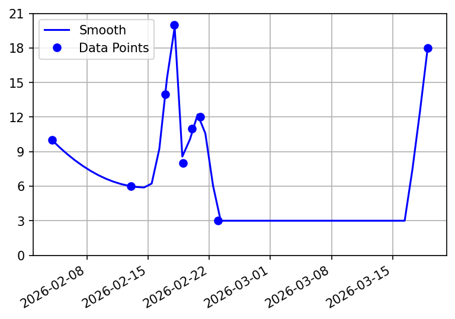
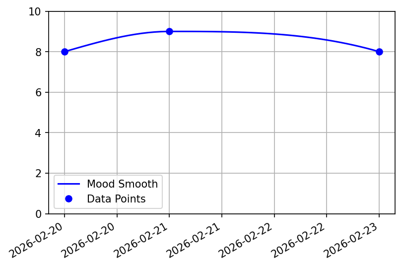
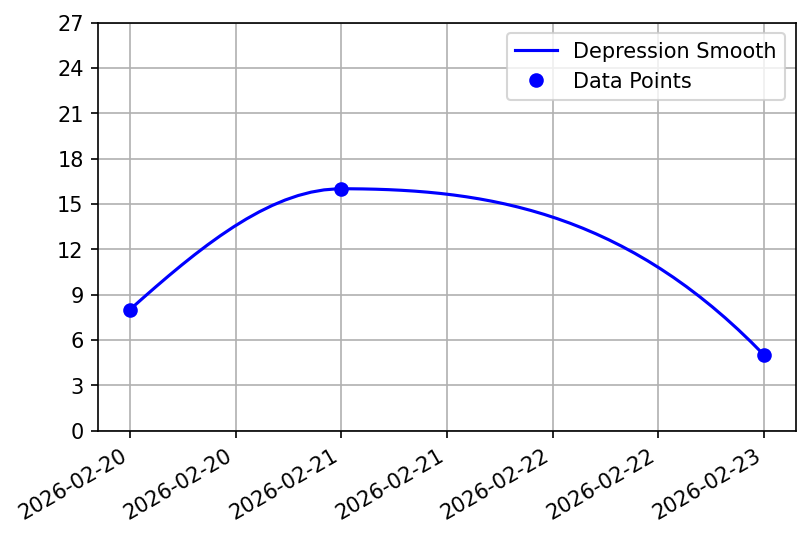

The following information is based on user-provided input and may contain inaccuracies due to reporting errors. This summary was generated automatically from user input and has not been reviewed or prepared by a medical professional.
This summary is intended to assist the user in presenting and discussing their tracked data with a medical professional or for personal record-keeping. The recorded information is derived from standardized medical screening instruments addressing various concerns. Each instrument is described in greater detail within its respective section.
Age: 42
Gender: -
E-Mail: test@mail
Started Tracking: 2026-01-20
The information presented here is derived from the GAD-71 screening instrument. Although originally developed for generalized anxiety disorder, the GAD-7 demonstrates reasonable validity for detecting other common anxiety disorders as well.

This assessment is based on a general mood scale ranging from 0 to 10, where 0 indicates the lowest mood and 10 indicates the most positive mood.
Explanation of recorded data.

Recommendation of action.
The data presented reflects a self-reported measure of sleep quality on a 0 to 10 scale, with 0 representing very poor sleep and 10 representing excellent sleep quality.

This measure captures self-reported sleep duration on a scale of 0 to 10, where lower scores indicate shorter sleep periods and higher scores indicate longer sleep periods.

The information is based on a straightforward questionnaire indicating whether self-harm behaviors occurred or were absent during the assessed period.
This summary is informed by the AUDIT-C1 (Alcohol Use Disorder Identification Test), a brief screening tool designed to identify patterns of alcohol misuse.

Further assessment is recommended to evaluate substance use patterns and potential risks.

The information is based on a shortened version of the EAT-261, a standardized self-report instrument for assessing disordered eating behaviors.

This information is derived from the PHQ-91 screening tool, which is widely used for screening, diagnosing, monitoring, and assessing the severity of depressive symptoms.

1 The screening tests and tools on which this information is based were developed using publicly available reference materials. One source consulted for several of these instruments was the National HIV Curriculum (www.hiv.uw.edu), where the screening tools were accessed through the "Tools & Calculators" section.